Computer Aided Design(CAD)
By: Debasis Parida on:
In this section, we have to work on various 2D & 3D designing tools and design some objects as assignments.I have used various raster and vector designing tools and some works are shown below:
Raster and Vector design Tools: 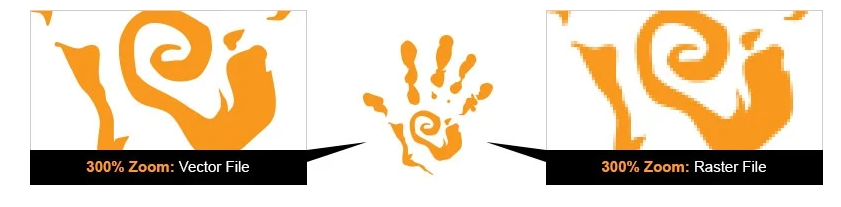
Digital graphic files will generally fall into one of two categories—vector or raster. Vector graphics, such as logo files are made up of points and lines to create paths, can be scaled up and down without losing quality. Raster graphics, such as digital photographs, are created using a grid of tiny pixels.
File extensions
The file extensions which can differentiate between raster and vector files are as below:
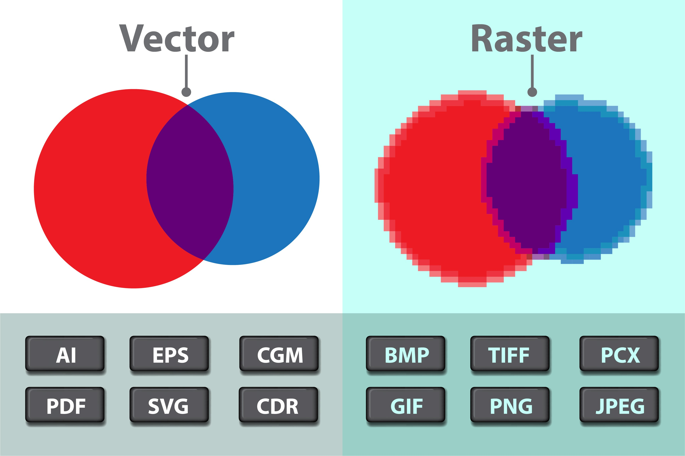Raster design software:
There are many software tools available in which we can do raster design. Some popular software include Adobe photoshop, GIMP, BIMP, Mypaint etc. in this session I have used some of them for designing raster files.
GIMP:
GIMP (GNU Image Manipulation Program) is a free and open-source raster graphics editor used for image manipulation and image editing, free-form drawing, transcoding between different image file formats. Here I used GIMP 2.10.22 version. Here I have used some tools and functionalities such as Image resize, crop, and edit using GIMP as shown below.
Importing & Resize image:
In GIMP we can upload an image using file-> open option.
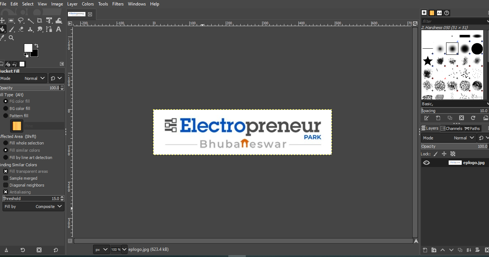To resize the image, we need to select “Scale image” from image section and then enter the new width and height values in the text box and hit enter, then we are able to scale down the image to the required size.
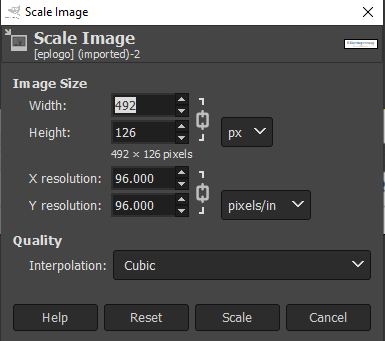Next, I uploaded a new image to crop it as per my convenience. For that I need to click on Crop option in the toolbox in left top menu. Then select the portion I need to crop. The hit enter. Now we can have the cropped image as shown below.
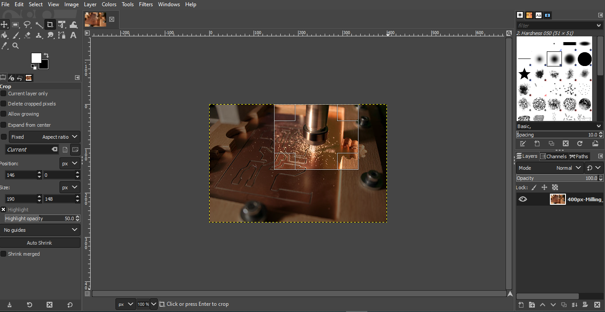 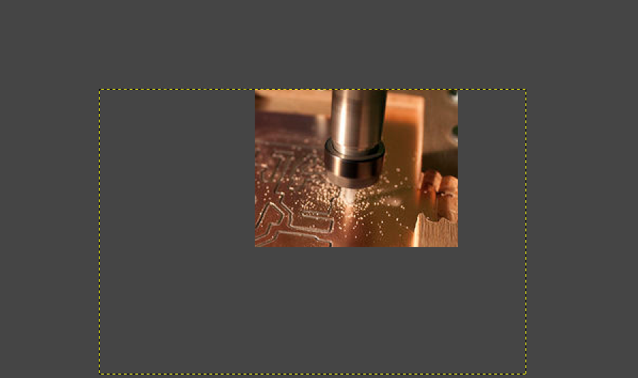Selection, Color fill, Background removal:
Similarly I tried some basic tools like Creation of basic shapes, fill them with different colors. I also tried to remove background from any image using selection tool.After selecting them using free selection tool, I changed the background with a pattern fill which looks like follows
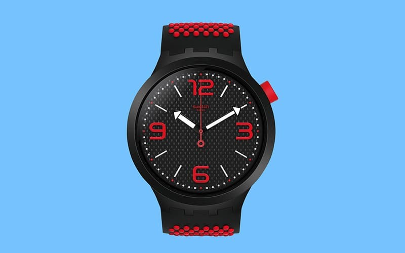 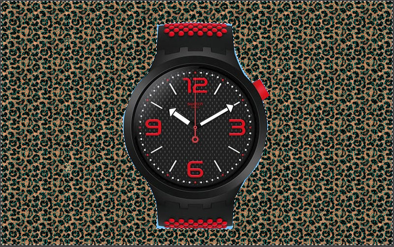Adobe Photoshop:
I have also tried adobe photoshop for creating some graphics and understanding their functionalities. I Found there are some similar tools are available here like Free selection tools, fill, erase, layer selection etc.
Making Transparent Image:
In some applications such as logos we need to use transparent designs so that it can be put anywhere without any background. So here I have taken an image with background and tried to erase the background to make it transparent. For this I have used a very interesting tool called magic wand tool which is used to quickly select certain portion of the image.
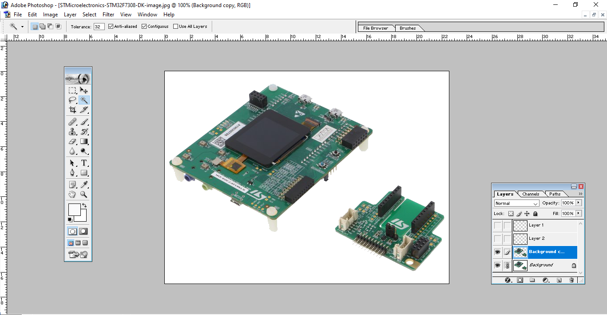 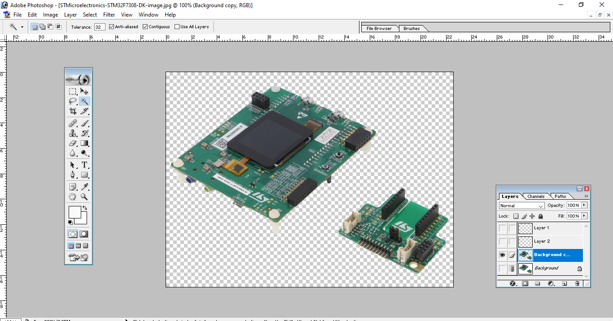Convert Colour image to grayscale:
In photoshop we can also convert color images into grayscale images. For this we have to select modes in Image tab in photoshop. Then we need to select Grayscale. That’s it!!!
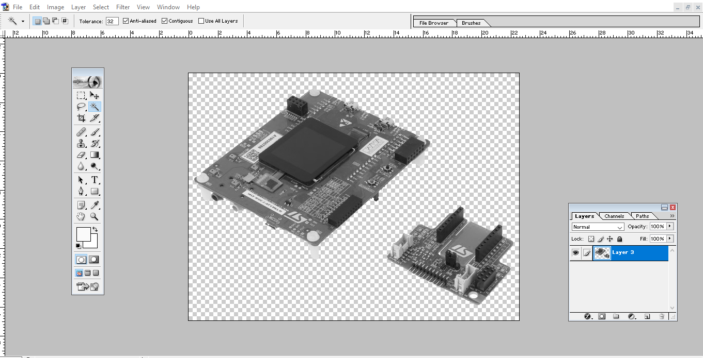Vector design Tools:
In Vector graphics, every point has an exact position on the X-axis and Y-axis of the Cartesian plane and specifies the direction of the path. Vector graphics are generally found in SVG, EPS, PDF, and AI file format. Here I used Inkspace software for vector designing which is an open source software. Some of the designs done using Inkspace are as follows.
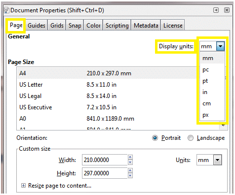 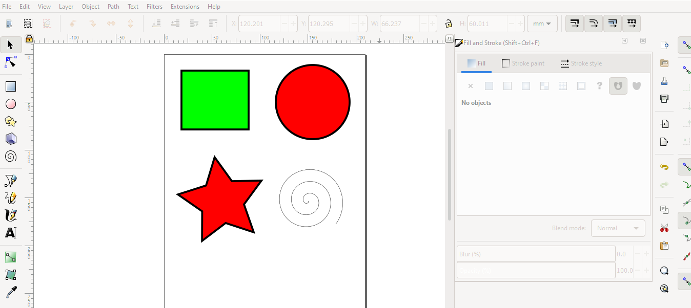Logical operations in Inkspace:
In inkscape we can also perform some logical operations like Unions, intersections, combinations etc. I have tried the exclusion tool whose results are shown below:
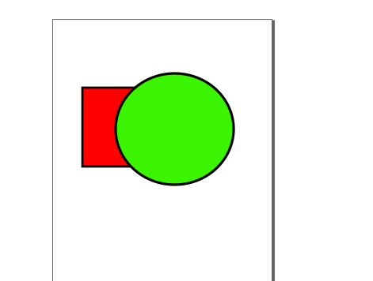 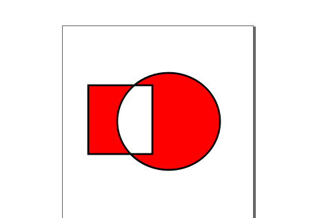3D designing:
3D modelling is the process of developing a mathematical representation of any surface of an object in three dimensions via specialized software. The product is called a 3D model. There are several 3D design software available such as Autodesk fusion 360, AutoCAD, FreeCAD, Blender etc. Here I have used some of them to design several models.
Autodesk fusion 360:
Autodesk fusion 360 is a paid software used to design 3D models. It has a relatively easy GUI and tools to create 3D objects.
Building basic blocks:
Here I have made some basic blocks using Fusion 360 and learn to use tools like Creating different sketches, using multiple constraints Extrude etc.
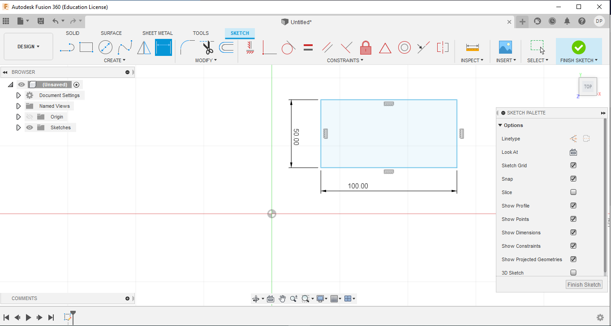 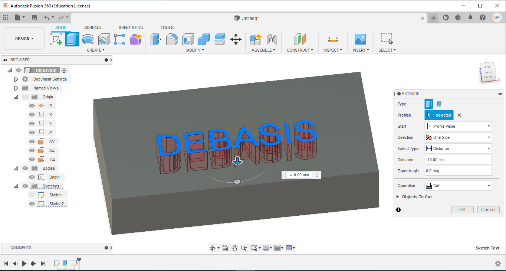 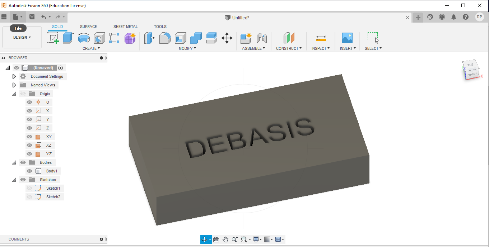Using some tools such as Fillets, Design constraints:
Using some advanced tools to make refinements in 3D model, I tried to make a Chair which is as follows. I also made a Pot using shell and revolve tool of Fusion 360.
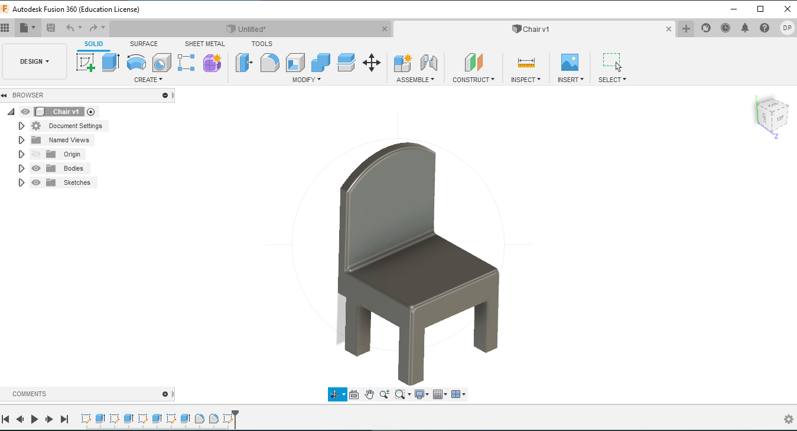 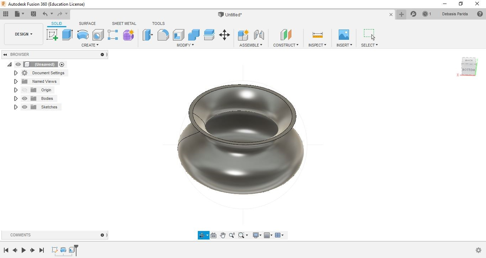